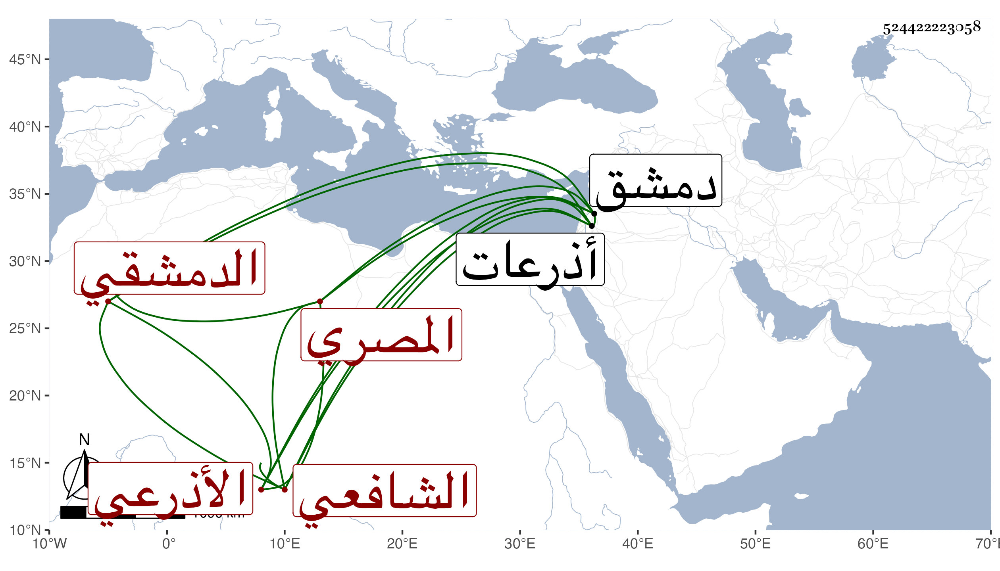

0902Sakhawi.DawLamic.ITO20230111-ara1.EIS1600.524422223058
Biography ID: 524422223058
أحمد بن حسن بن علي بن محمد بن عبد الرحمن الشهاب الأذرعي الدمشقي ثم المصري الشافعي . ولد باذرعات وتحول منها إلى دمشق وحفظ القرآن وأخذ عن ناصر الدين بن قديدار في العلم والتصوف وأم بجامع بني أمية فاتفق أن المؤيد حين كان نائبها سمع قراءته فطرب فاستدعى به فقرره إمامه ولما كانت الوقعة بينه وبين الناصر وانهزم الناصر حضرت المغرب فتقدم للإمامة على العادة فقرأ في الأولى واذكروا إذ أنتم قليل مستضعفون في الأرض الآية فاستحسنها الأمير وتفاءل بتمام النصر فكان كذلك ولذا زاد حين تم الأمر له في تقريبه وجعله من ندمائه واستقر به وبذريته في إمامة جامعه وكذا اختص بالزيني عبد الباسط واستقر به في مشيخة مدرسته التي أنشأها بخط الكافوري وأثرى ولم يزل يؤم من بعد المؤيد من الملوك حتى مات بعد تعلله نحو سبعة أشهر بالاستسقاء وغيره في العشر الأول من جمادى الأولى سنة إحدى وخمسين عن ثلاث وسبعين سنة وخلف ثلاثة عشر ذكرا سوى الإناث وكان عاقلا ساكنا نيرا مشاركا جيد القراءة في المحراب إلى الغاية ندي الصوت بحيث كان يشارك في الموسيقا منطويا على ديانة وخير واهتمام مع من يقصده ومحبة في المعروف ومزيد انقياد للشرع وتعظيم حملته . ومن لطائفه أنه استعمل في إغراء السلطان بالأكرم النصراني فقرأ به في الصلاة سورة اقرأ فلما انتهى إلى قوله وربك الأكرم بكى وقطع القراءة فسأله المؤيد عن ذلك فقال أجللت هذا الوصف العظيم أن يتسمى به هذا اللعين وأشار إلى النصراني فكان ذلك سببا لإتلافه ، ومحاسنه كثيرة وهو ممن سمع على شيخنا وكان مبجلا له وقد أطلت ترجمته في التبر المسبوك .
